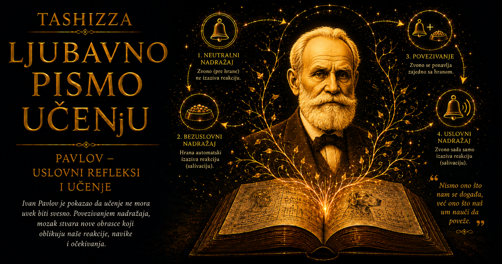

Ljubavno pismo učenju

Ivan Petrovič Pavlov u popularnom pamćenju stoji kraj psa, posude sa hranom i zvona. Ta svedena slika odavno je prerasla u kulturni simbol, ali jedva da otkriva čoveka koji se iza nje nalazio. Pavlov je bio sin pravoslavnog sveštenika koji je napustio put prema crkvenoj službi, fiziolog opsednut preciznošću, zahtevan vođa laboratorije, prvi ruski nobelovac, otvoreni protivnik boljševičke vlasti koga je ta ista vlast obilno finansirala i istraživač navika koji je sopstveni život uređivao gotovo ritualnim redom.
Rođen je 26. septembra 1849. godine po starom ruskom kalendaru, odnosno 14. septembra prema tadašnjem julijanskom računanju vremena, u Rjazanju. Njegov otac Petar Dmitrijevič bio je pravoslavni sveštenik, snažan, praktičan i strog čovek, dok je majka Varvara Ivanovna vodila veliko domaćinstvo i brinula o brojnoj porodici. Ivan je odrastao u svetu crkvenih obreda, fizičkog rada, porodične discipline i jasnog ritma dana. Taj rani spoj duhovnog autoriteta i svakodnevne strogosti ostavio je trag čak i nakon što je napustio religiozni život.
Detinjstvo mu je obeležila nezgoda koja je privremeno usporila školovanje. Kao dečak pao je sa visine na kamenu podlogu i dugo se oporavljao, zbog čega je formalno obrazovanje započeo kasnije od svojih vršnjaka. Vreme oporavka provodio je čitajući, posmatrajući prirodu i pomažući u porodičnim poslovima. Izrastao je u snažnog i fizički aktivnog čoveka koji je tokom čitavog života cenio šetnju, plivanje, vožnju bicikla, rad u bašti i igre koje su zahtevale pokret i preciznost.
Kao sveštenički sin upisao je bogosloviju u Rjazanju, pa je izgledalo da će nastaviti porodičnu tradiciju. Ruska intelektualna klima šezdesetih godina devetnaestog veka, međutim, donosila je nove ideje o prirodi, društvu i ulozi nauke. Posebno su ga privukle knjige fiziologa Ivana Sečenova, među njima delo „Refleksi mozga”, kao i ruski prevod Darvinovih spisa. U tim tekstovima pronašao je mogućnost da se život i ponašanje proučavaju kroz zakonitosti dostupne posmatranju i eksperimentu.
Odluka da napusti bogosloviju predstavljala je dubok raskid sa očekivanjima porodice i sredine. Pavlov nije jednostavno zamenio jednu profesiju drugom; promenio je izvor autoriteta kojem će posvetiti život. Umesto objavljene istine izabrao je činjenicu koja mora biti proverena, a laboratorijska disciplina postala je njegova vrsta etike. Godine 1870. upisao je prirodne nauke na Univerzitetu u Sankt Peterburgu, odlučan da fiziologiju učini svojim pozivom.
Među profesorima koje je slušao nalazio se Dmitrij Mendeljejev, tvorac periodnog sistema elemenata. Mladom Pavlovu takva intelektualna sredina pokazivala je da priroda, ma koliko složena, može otkriti zakonit red. Posebno ga je usmerio fiziolog Ilja Cion, vrstan eksperimentator i istovremeno teška, sukobima praćena ličnost. Od njega je Pavlov učio finu hiruršku tehniku, strogu kontrolu eksperimenta i umeće da se fiziološka funkcija posmatra u živom organizmu.
Pavlov se rano istakao radom o nervima pankreasa, za koji je dobio studentsku zlatnu medalju. Posle osnovnih studija upisao je Carsku medicinsko-hiruršku akademiju kako bi produbio znanje fiziologije. Njegov profesionalni put ipak nije tekao glatko. Godinama je radio na privremenim položajima, zavisio od laboratorija starijih profesora i čekao stalno zaposlenje. Izuzetan dar nije ga poštedeo institucionalne nesigurnosti niti finansijskih teškoća koje su pratile mnoge mlade naučnike tadašnje Rusije.
Presudan uticaj imao je lekar Sergej Botkin, čija je škola povezivala kliničku medicinu sa eksperimentalnom fiziologijom i naglašavala ulogu nervnog sistema u regulaciji telesnih funkcija. U laboratoriji povezanoj sa Botkinovom klinikom Pavlov je proučavao krvotok, krvni pritisak i rad srca. Tu je razvijao svoj karakteristični pristup: dugotrajno posmatranje oporavljenog organizma u relativno prirodnim uslovima, umesto oslanjanja isključivo na kratke oglede pod dubokom anestezijom.
Usavršavao se i u Nemačkoj kod vodećih fiziologa Rudolfa Hajdenhajna i Karla Ludviga. U njihovim laboratorijama upoznao je najrazvijenije evropske eksperimentalne metode, precizne instrumente i istraživačku kulturu u kojoj se svaki zaključak oslanjao na niz kontrolisanih merenja. Po povratku u Rusiju spojio je tu metodološku strogost sa sopstvenom izdržljivošću i sklonošću ka dugotrajnim serijama eksperimenata.
Godine 1881. oženio se Serafimom Vasiljevnom Karčevskom, učiteljicom i duboko religioznom ženom. Njihov brak trajao je više od pola veka, kroz siromaštvo, porodične gubitke, naučnu slavu, revolucije i rat. Serafima je preuzimala veliki deo porodičnih obaveza, štitila mu vreme za rad i podnosila njegovu potpunu uronjenost u laboratoriju. Pavlovljeva naučna biografija teško se može razumeti bez nevidljivog rada žene koja je održavala svakodnevni život dok je on gradio karijeru.
Prve godine braka bile su veoma teške. Mladi par često nije imao dovoljno novca za siguran stan, hranu i negu dece. Njihovo prvo dete umrlo je u ranom detinjstvu, a bol zbog gubitka pratila je već postojeću materijalnu nesigurnost. Pavlov je ponekad bio toliko zaokupljen eksperimentima da je praktične probleme porodice prepuštao drugima. Njegova posvećenost nauci imala je cenu koju nisu plaćali samo on, već i ljudi koji su ga voleli.
Tek početkom devedesetih godina devetnaestog veka dobio je stabilnije institucionalne uslove. Postao je rukovodilac Odeljenja za fiziologiju u Institutu za eksperimentalnu medicinu, a zatim profesor fiziologije na Vojnomedicinskoj akademiji. U tim ustanovama izgradio je istraživačku školu koja će privlačiti studente i saradnike iz Rusije i inostranstva. Laboratorija je postala zajednica sa sopstvenim pravilima, jezikom i ritmom, u kojoj se jedna pojava mogla pratiti godinama.
Središte njegovog zrelog ranog rada bila je fiziologija varenja. Pavlov je usavršio hirurške metode kojima su se sekreti pljuvačnih žlezda, želuca, pankreasa i drugih organa mogli prikupljati kod životinja oporavljenih od operacije. Posebno je poznat postupak stvaranja izdvojenog dela želuca koji je zadržavao nervne veze sa ostatkom organa, dok je istraživačima omogućavao da njegov sekret mere odvojeno od hrane.
Takvi eksperimenti otkrili su da digestivni sistem reaguje prilagođeno vrsti hrane i fazi varenja. Meso, hleb i druge namirnice izazivali su različite količine i sastav digestivnih sokova, dok je nervni sistem usklađivao rad više organa. Telo se pred Pavlovljevim instrumentima pokazivalo kao koordinisana celina sposobna da unapred pripremi odgovarajući odgovor.
Posebnu teškoću izazivalo je takozvano psihičko lučenje. Pas bi počeo da luči pljuvačku ili želudačni sok pri pogledu na hranu, njenom mirisu ili pojavi osobe koja ju je uobičajeno donosila. Za eksperimentatora koji želi da meri neposredno dejstvo hrane takva reakcija remetila je urednost ogleda. Pavlovljeva istraživačka veličina pokazala se u trenutku kada je odstupanje prihvatio kao novu činjenicu koju treba objasniti.
Nobelovu nagradu za fiziologiju ili medicinu dobio je 1904. godine za istraživanja fiziologije varenja, postavši prvi ruski dobitnik Nobelove nagrade. Kasnija slava uslovnih refleksa često je potisnula pravi razlog priznanja. Nobelov komitet nagradio je njegov rad na digestivnim žlezdama i preobražaj znanja o varenju; čuvena priča o psima i signalima tek će u narednim decenijama postati središnji deo njegovog međunarodnog ugleda.
Pavlovljevi eksperimenti sa signalima bili su mnogo složeniji od kasnije legende o jednom zvonu. Njegova grupa koristila je metronome, zujalice, zvižduke, svetlosne signale, geometrijske oblike, dodire, mirise i tonove različite visine. Istraživači su ispitivali stvaranje i gašenje odgovora, njegovo širenje na slične podsticaje, sposobnost razlikovanja, vremenski raspored signala i povratak reakcije nakon prividnog nestanka.
Preciznost tih ogleda zahtevala je posebnu arhitekturu. Pas je mogao čuti korak, osetiti vibraciju poda, prepoznati miris čoveka ili registrovati promenu koju istraživač uopšte nije primećivao. Svaki slučajni događaj mogao je postati novi signal i promeniti rezultat. Zbog toga su u Institutu za eksperimentalnu medicinu izgrađene izolovane prostorije poznate kao „Kula tišine”, sa debelim zidovima, odvojenim temeljima, dvostrukim vratima i komorama smeštenim unutar drugih prostorija.
Potpuna izolacija ipak je ostala nedostižan ideal. Grad je proizvodio vibracije, prolazila su kola, odjekivali su koraci, menjala se temperatura, a životinje su opažale podsticaje izvan granica ljudskih čula. Sama zgrada postala je potvrda Pavlovljeve osnovne misli: živi organizam neprestano registruje pravilnosti u okolini. Laboratorija za psa nikada nije bila prazna pozornica sa jednim signalom, već gust svet mirisa, zvukova, pokreta i očekivanja.
Pavlovljeva nauka bila je kolektivni poduhvat. Desetine, a tokom vremena i stotine lekara, hirurga, tehničara, negovatelja i studenata učestvovale su u istraživanjima. Ivan Toločinov rano je predstavio nalaze o onome što se tada nazivalo refleksom na daljinu, Marija Petrova provela je decenije u laboratoriji, Nikolaj Krasnogorski proučavao je uslovne reflekse kod dece, dok je Leon Orbeli kasnije postao jedan od vodećih sovjetskih fiziologa. Mnogi rezultati poznati pod Pavlovljevim imenom nastali su iz rada čitave škole.
Kao vođa, Pavlov je postavljao pitanja, menjao tumačenja, zahtevao dodatne kontrole i povezivao pojedinačne nalaze u širu teoriju. Laboratorijske sednice često su ličile na unakrsno ispitivanje. Želeo je da zna ko je ušao u prostoriju, kada je životinja hranjena, da li se promenila temperatura, koliko je signal trajao i postoji li podatak koji protivreči ponuđenom objašnjenju. Jedna neočekivana kap pljuvačke mogla je pokrenuti raspravu koja se završavala novom serijom eksperimenata.
Njegov temperament bio je snažan, nagao i zahtevan. Umeo je da plane, povisi glas i grubo kritikuje saradnike, a potom se smiri i prihvati rezultat koji ruši njegovo prethodno mišljenje. Tražio je od drugih onu vrstu potpune predanosti koju je zahtevao od sebe, često zanemarujući različite granice, okolnosti i potrebe ljudi. Istovremeno je mogao zaštititi mladog istraživača, podržati kolegu pred vlastima i javno priznati sopstvenu grešku kada bi činjenice bile jasne.
Prema njegovom shvatanju, nauka se raspada kada istraživač počne da štiti sujetu umesto rezultata. Saradnici su morali da razlikuju ono što su zaista opazili od naknadnog tumačenja, da opišu svaki relevantan uslov i zabeleže podatak čak i kada kvari lepo zamišljenu teoriju. Njegova netrpeljivost prema neurednoj misli donosila je metodološku snagu, ali je u međuljudskim odnosima mogla postati nepravedna i bolna.
Pavlov je dugo zabranjivao saradnicima da govore kako pas „želi”, „zna”, „očekuje” ili „namerava”. Takve reči smatrale su se previše neodređenim za fiziološki eksperiment. Istraživač je trebalo da opiše signal, vreme njegove pojave, merljivu reakciju i uslove pod kojima se ona menja. Ta zabrana nije poricala postojanje unutrašnjeg života; izražavala je Pavlovljevo uverenje da naučno objašnjenje treba započeti od onoga što se može kontrolisano proveriti.
Van laboratorije njegov život bio je uređen strogim rasporedom. Rad, obroci, šetnja, odmor i rekreacija imali su svoje vreme. Leta je provodio u Silameu na obali Finskog zaliva, gde je plivao, vozio bicikl, radio u bašti i igrao rusku igru gorodki. I u poznim godinama ostao je fizički aktivan. Verovao je da postojan ritam čuva energiju i oslobađa pažnju za složen istraživački rad.
U tome se nalazi upečatljiva podudarnost između njegovog života i nauke. Čovek koji je proučavao kako ponovljeni sledovi oblikuju očekivanje izgradio je sopstvenu svakodnevicu od navika. Ustaljeni raspored smanjivao je broj sitnih odluka i čuvao vreme za istraživanje. Ista osobina imala je tamniju stranu: čovek naviknut da svemu određuje ritam teško prihvata ritam drugih ljudi i nepredvidljivost porodičnog života.
Pavlov je pokušavao da razlike među psima objasni snagom, ravnotežom i pokretljivošću procesa pobuđivanja i kočenja u nervnom sistemu. Povezivao ih je čak i sa starim podelama na sangvinični, kolerični, flegmatični i melanholični temperament. Savremena nauka takvu šemu ne prihvata kao dovoljnu teoriju ličnosti, ali je u njegovim opažanjima ostao važan uvid: isti uslovi ne oblikuju svaki organizam na jednak način. Prethodno iskustvo, biološke osobine i individualna osetljivost menjaju tok učenja.
Dramatičan događaj pružio mu je priliku da posmatra posledice krajnjeg straha. U septembru 1924. godine Neva je poplavila delove Lenjingrada, a voda je prodrla u prostorije sa laboratorijskim psima. Životinje su ostale zarobljene u kavezima dok je nivo vode rastao i spasene su u poslednjem trenutku. Nakon poplave kod nekih pasa ranije stabilni uslovni odgovori oslabili su ili postali nepredvidivi, dok su zvuci i situacije povezani sa nesrećom izazivali snažnu uznemirenost.
Pavlov je te promene tumačio kao posledicu preopterećenja nervnog sistema. Njegov pojmovni okvir razlikovao se od savremenog razumevanja traume i posttraumatskog stresnog poremećaja, ali su opažanja pokazivala da zastrašujuće iskustvo može dugo menjati ponašanje i narušiti prethodno naučene obrasce. Organizam pamti i događaje od kojih bi svesni um želeo da se udalji.
Istraživao je i ono što je nazivao eksperimentalnim neurozama. Kada je pas trebalo da razlikuje dva sve sličnija podsticaja, od kojih je jedan najavljivao važan ishod, dok drugi nije, ponašanje se ponekad dezorganizovalo. Životinja bi postajala uznemirena, pokušavala da pobegne ili gubila ranije stabilne odgovore. Pavlov je u tim pojavama video sukob između pobuđivanja i kočenja. Njegovi ogledi otvorili su pitanje o fiziološkoj ceni dugotrajne neizvesnosti i sveta u kojem znakovi gube pouzdano značenje.
Revolucije 1917. godine srušile su predvidljivost Pavlovljevog društvenog sveta. Nije idealizovao carsku Rusiju, čiju je birokratiju, cenzuru i slabu podršku nauci dobro poznavao, ali je boljševičku revoluciju smatrao opasnim eksperimentom nad milionima ljudi. Građanski rat, glad, hladnoća i raspad institucija ugrozili su njegovu porodicu, saradnike i laboratorijske životinje. U Petrogradu bez dovoljno hrane i goriva Pavlov je uzgajao povrće kako bi preživeo i održao istraživanja.
Razmatrao je mogućnost odlaska iz zemlje. Lenjin i novi državni vrh shvatili su da bi odlazak prvog ruskog nobelovca predstavljao težak udarac međunarodnom ugledu režima. Posebnom odlukom iz 1921. godine Pavlovu i njegovim saradnicima obezbeđeni su hrana, gorivo, prostor i sredstva za nastavak rada. Tako je vlast koju je otvoreno osuđivao počela da ulaže velika sredstva u njegovu istraživačku školu.
Pavlov nije postao poslušan simbol režima. Govorio je protiv političkog nasilja, progona, zatvaranja neistomišljenika, napada na verske zajednice i gušenja intelektualne slobode. Pisao je državnim vođama i zalagao se za pojedine uhapšene ljude. Njegov međunarodni ugled pružao mu je zaštitu koju većina građana nije imala, pa je mogao izgovoriti reči zbog kojih bi drugi bili zatvoreni ili ubijeni.
Njegova moralna pozicija ostala je puna protivrečnosti. Koristio je sredstva države čiju je represiju osuđivao, dok je sovjetska propaganda njegove rezultate predstavljala kao potvrdu zvaničnog materijalizma. Njegova laboratorija rasla je unutar sistema prinude, a njegov položaj omogućavao mu je slobodu nedostupnu manje poznatim ljudima. Ta napetost ne briše njegovu hrabrost, ali pokazuje koliko su izbori intelektualca u diktaturi složeni i retko potpuno čisti.
U Koltušima, izvan Lenjingrada, sovjetska država razvila je veliki kompleks za istraživanje viših nervnih aktivnosti, svojevrsno naučno naselje sa laboratorijama, smeštajem za saradnike i prostorima za životinje. Pavlov je u poznim godinama dobio uslove o kojima je u mladosti mogao samo sanjati. Vodio je više laboratorija, održavao međunarodne veze i nastavljao da javno kori vlast koja ga je slavila kao nacionalnog naučnog patrijarha.
Od dvadesetih godina održavao je redovne sastanke poznate kao Pavlovljeve „srede”. Sačuvani zapisi prikazuju ga življe od zvaničnih portreta: uzbuđuje se, šali, ljuti, menja mišljenje, vraća se na isti problem i zahteva novu proveru onoga što je prethodne nedelje izgledalo rešeno. Nauka u tim razgovorima deluje kao javno mišljenje izloženo stalnom pritisku činjenica, a ne kao zbir mirno dovršenih istina.
Mladim istraživačima savetovao je da uče osnove svoje oblasti, prikupljaju činjenice bez prezira prema sitnom radu i nikada ne poveruju da već znaju dovoljno. Velika zamisao bez strpljenja za kontrolni eksperiment u njegovim očima nije imala punu naučnu vrednost. Njegova sopstvena karijera potvrđivala je takav ideal: najvažniji uvidi nastali su iz dugih serija ogleda, dok se značaj rezultata otkrivao postepeno.
Pavlovljev metod imao je i ozbiljnu etičku senku. Istraživanja su podrazumevala hirurške zahvate i dugotrajnu upotrebu životinja u vremenu kada su standardi eksperimentalne etike bili bitno drugačiji od današnjih. Pavlov je naglašavao potrebu za veštom operacijom, oporavkom i što stabilnijim stanjem životinje, jer su bol i uznemirenost remetili rezultate. Takva briga imala je i metodološki i moralni element, ali ne uklanja neprijatna pitanja koja njegovi eksperimenti opravdano postavljaju savremenom čitaocu.
Krajem života pokušavao je da pojmove pobuđivanja, kočenja i zaštitnog sna primeni na psihijatrijske poremećaje. Posećivao je klinike i raspravljao o depresiji, shizofreniji, katatoniji i drugim oblicima duševne patnje. Ta objašnjenja danas imaju istorijsku vrednost i ne mogu obuhvatiti složenost savremene psihijatrije. Ona ipak svedoče o njegovoj trajnoj želji da premosti razdaljinu između fiziologije nervnog sistema i ljudskog iskustva.
Verovao je da znanje o uzrocima ponašanja može povećati slobodu. Čovek koji ne prepoznaje sopstvene obrasce često im se pokorava smatrajući ih nepromenljivim delom karaktera. Razumevanje okolnosti u kojima su nastali pruža mogućnost da se promeni okruženje, vežba drugačiji odgovor i izgradi novo iskustvo. Njegov strogi naučni determinizam zato je sadržao prosvetiteljsku nadu da uzročno objašnjenje može otvoriti prostor za promenu.
Pavlovljevi najbolji rezultati često su nastajali kada stvarnost nije poslušala njegov plan. Psihičko lučenje poremetilo je ogled varenja i otvorilo istraživanje uslovnih refleksa. Povratak ugašenog odgovora pokazao je da zaboravljanje ima složeniju strukturu. Poplava je otvorila pitanje trajnog straha, a razlike među psima osporile su pretpostavku da isti postupak kod svakog organizma daje isti rezultat. Tražio je zakonitost, ali su ga prema njoj najčešće vodila odstupanja.
Međunarodni naučni svet ukazao mu je izuzetne počasti. Pored Nobelove nagrade, postao je strani član Kraljevskog društva, dobio Koplijevu medalju i druga priznanja. Na Petnaestom međunarodnom kongresu fiziologa, održanom 1935. godine u Lenjingradu i Moskvi, slavljen je kao „princ fiziologa”. Iza svečanog lika sedog patrijarha nalazio se osamdesetogodišnjak koji je i dalje pratio eksperimente i raspravljao o rezultatima.
Porodični gubici pratili su njegove poslednje godine. Sin Vsevolod umro je 1935. godine od bolesti pankreasa, organa koji je Pavlov proučavao još kao mlad istraživač. Naučno znanje koje je doprinelo razumevanju varenja nije moglo da zaštiti njegovo dete. U takvom gubitku pojavila se granica svake naučne moći: opšti zakon može produbiti razumevanje života, dok pred pojedinačnom patnjom ponekad ostaje nemoćan.
Pavlov je umro 27. februara 1936. godine u Lenjingradu od posledica upale pluća. Prema sećanjima njegovih učenika, tokom poslednje bolesti posmatrao je promene u sopstvenom stanju i govorio o njima kao fiziolog. Oko njegovih poslednjih dana kasnije su nastale legende, ali su delovale uverljivo jer su odgovarale čoveku koji je čitav život pretvarao opažanje u istraživačko pitanje.
Posle smrti sovjetska država još snažnije je prisvojila njegovo nasleđe. Njegovo ime dobijali su instituti, škole i ulice, dok je „Pavlovljeva fiziologija” proglašavana gotovo obavezujućim naučnim pravcem. U tome je bilo istorijske ironije: čovek koji je upozoravao na opasnost dogme pretvaran je u autoritet čije se tvrdnje nisu smele preispitivati.
Izvan Sovjetskog Saveza njegovi nalazi nastavili su život u teorijama učenja, bihevioralnoj terapiji, proučavanju straha, zavisnosti, averzije prema ukusu, imunološkog uslovljavanja i neuronskog predviđanja. Savremena nauka koristi snimanje moždane aktivnosti, molekularne metode i računarske modele koje Pavlov nije mogao zamisliti, ali se i dalje vraća pitanju koje je njegova laboratorija učinila merljivim: kako znak iz okoline stiče biološko značenje?
Njegovo ime danas se ponekad koristi kao metafora za potpunu manipulaciju, kao da su ljudi samo složeniji Pavlovljevi psi kojima treba pronaći odgovarajuće dugme. Takva karikatura osiromašuje njegove stvarne nalaze. Uslovni odgovor zavisi od konteksta, istorije organizma, pouzdanosti signala, važnosti ishoda i individualnih osobina. Može oslabiti, vratiti se, promeniti ili doći u sukob sa novim učenjem. Čovekova sposobnost govora, samoposmatranja i menjanja sopstvene sredine dodatno proširuje prostor mogućih odgovora.
Pavlovljeva istraživanja ipak nose ozbiljno društveno upozorenje. Ponavljani znakovi mogu oblikovati osećanja pre nego što započne promišljanje. Reklama povezuje proizvod sa pripadanjem, propaganda grupu ljudi sa strahom ili gađenjem, dok digitalna platforma povezuje obaveštenje sa mogućnošću nagrade. Razumevanje takvih obrazaca pomaže čoveku da zastane i upita šta je prethodilo njegovom porivu, kakav je ishod naučio da očekuje i ko ima korist od njegove automatske reakcije.
Pavlovljev život pokazuje i kako navika može služiti stvaralaštvu. Njegov strogi raspored čuvao je vreme za duboki rad u životu punom institucionalnih sukoba, porodičnih briga i političkih potresa. Laboratorija je mogla godinama da prati jednu pojavu zato što su stotine sitnih postupaka bile standardizovane: instrument se priprema na isti način, signal se daje određenim redosledom, a rezultat se zapisuje i onda kada protivreči omiljenoj teoriji.
Slabost takvog karaktera nalazila se blizu njegove snage. Potpuna posvećenost radu opterećivala je porodicu i saradnike, potreba za kontrolom donosila je netrpeljivost prema nepredvidljivosti, a vera u fiziološko objašnjenje ponekad je prevazilazila dokaze koje su eksperimenti mogli pružiti. Pavlovljeva veličina ne zahteva sliku besprekornog čoveka. Ona postaje uverljivija kada se vidi zajedno sa grubošću, protivrečnostima, institucionalnim privilegijama i cenom koju su plaćali ljudi i životinje oko njega.
U središtu njegovog karaktera nalazio se istraživački nagon — potreba da se pojava vidi sopstvenim očima, iza prividne slučajnosti pronađe odnos i zaključak ponovo izloži riziku eksperimenta. Taj nagon zahtevao je strpljenje za sitne razlike, spremnost na ponavljanje i intelektualnu hrabrost da se promeni mišljenje pred neočekivanim rezultatom.
Stvarni Pavlov zato je daleko zanimljiviji od čoveka sa zvonom iz školskih ilustracija. Bio je sveštenički sin koji je nauku pretvorio u etiku, eksperimentator koji je smetnju preobrazio u životno delo, grub učitelj sposoban za intelektualnu velikodušnost, kritičar revolucije koga je revolucija finansirala, protivnik dogme pretvoren posle smrti u dogmatski autoritet i istraživač navika koji je sopstveni život organizovao ritualnom preciznošću.
Njegova najdragocenija pouka možda se nalazi u načinu na koji je prihvatio neočekivanu reakciju. Kada je pas počeo da luči pljuvačku pre nego što je dobio hranu, Pavlov je mogao zapisati da je ogled pokvaren. Umesto toga, zastao je pred odstupanjem i upitao kakvu pravilnost ono otkriva. U toj odluci prepoznaje se suština istraživačkog duha: dovoljno discipline da se odstupanje primeti, dovoljno skromnosti da mu se prizna značaj i dovoljno radoznalosti da se zbog njega promeni prvobitno pitanje.
Tako je u laboratoriji ispunjenoj cevčicama, metronomima, izolovanim komorama, životinjskim koracima i pažljivo zabeleženim kapima ponašanje dobilo vremensku strukturu. Između znaka i odgovora pojavila se istorija iskustva, a između ponavljanja i navike očekivanje. Pavlov je proveo život pokušavajući da taj nevidljivi trenutak učini merljivim. Njegova priča ostaje važna svima koji uče jer podseća da veliko otkriće ponekad započinje upravo onda kada stvarnost odbije da se ponaša prema našem planu.